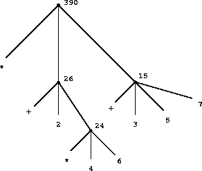

The acts of the mind, wherein it exerts its power over simple ideas, are chiefly these three: 1. Combining several simple ideas into one compound one, and thus all complex ideas are made. 2. The second is bringing two ideas, whether simple or complex, together, and setting them by one another so as to take a view of them at once, without uniting them into one, by which it gets all its ideas of relations. 3. The third is separating them from all other ideas that accompany them in their real existence: this is called abstraction, and thus all its general ideas are made.
John Locke, An Essay Concerning Human Understanding (1690)
We are about to study the idea of a computational process. Computational processes are abstract beings that inhabit computers. As they evolve, processes manipulate other abstract things called data. The evolution of a process is directed by a pattern of rules called a program. People create programs to direct processes. In effect, we conjure the spirits of the computer with our spells.
A computational process is indeed much like a sorcerer's idea of a spirit. It cannot be seen or touched. It is not composed of matter at all. However, it is very real. It can perform intellectual work. It can answer questions. It can affect the world by disbursing money at a bank or by controlling a robot arm in a factory. The programs we use to conjure processes are like a sorcerer's spells. They are carefully composed from symbolic expressions in arcane and esoteric programming languages that prescribe the tasks we want our processes to perform.
A powerful programming language is more than just a means for instructing a computer to perform tasks. The language also serves as a framework within which we organize our ideas about processes. Thus, when we describe a language, we should pay particular attention to the means that the language provides for combining simple ideas to form more complex ideas. Every powerful language has three mechanisms for accomplishing this:
In programming, we deal with two kinds of elements: procedures and data. (Later we will discover that they are really not so distinct.) Informally, data is ``stuff'' that we want to manipulate, and procedures are descriptions of the rules for manipulating the data. Thus, any powerful programming language should be able to describe primitive data and primitive procedures and should have methods for combining and abstracting procedures and data.
One easy way to get started at programming is to examine some typical interactions with an interpreter for the Scheme dialect of Lisp. Imagine that you are sitting at a computer terminal. You type an expression, and the interpreter responds by displaying the result of its evaluating that expression.
One kind of primitive expression you might type is a number. (More precisely, the expression that you type consists of the numerals that represent the number in base 10.) If you present Lisp with a number
486
the interpreter will respond by printing5
486
Expressions representing numbers may be combined with an expression representing a primitive procedure (such as + or *) to form a compound expression that represents the application of the procedureto those numbers. For example:
(+ 137 349)
486
(- 1000 334)
666
|
Expressions such as these, formed by delimiting a list of expressions within parentheses in order to denote procedure application, are called combinations. The leftmost element in the list is called the operator, and the other elements are called operands. The value of a combination is obtained by applying the procedure specified by the operator to the arguments that are the values of the operands.
which the interpreter would readily evaluate to be 57. We can help ourselves by writing such an expression in the form following a formatting convention known as pretty-printing, in which each long combination is written so that the operands are aligned vertically. The resulting indentations display clearly the structure of the expression.
(+ (* 3
(+ (* 2 4)
(+ 3 5)))
(+ (- 10 7)
6))
|
Even with complex expressions, the interpreter always operates in the same basic cycle: It reads an expression from the terminal, evaluates the expression, and prints the result. This mode of operation is often expressed by saying that the interpreter runs in a read-eval-print loop. Observe in particular that it is not necessary to explicitly instruct the interpreter to print the value of the expression.7
A critical aspect of a programming language is the means it provides for using names to refer to computational objects. We say that the name identifies a variable whose value is the object.
In the Scheme dialect of Lisp, we name things with define. Typing
(define size 2)
One of our goals in this chapter is to isolate issues about thinking procedurally. As a case in point, let us consider that, in evaluating combinations, the interpreter is itself following a procedure.
To evaluate a combination, do the following:
Even this simple rule illustrates some important points about processes in general. First, observe that the first step dictates that in order to accomplish the evaluation process for a combination we must first perform the evaluation process on each element of the combination. Thus, the evaluation rule is recursive in nature; that is, it includes, as one of its steps, the need to invoke the rule itself.

Figure 1.1: Tree representation, showing the value of each subcombination.
Such exceptions to the general evaluation rule are called special forms. Define is the only example of aspecial form that we have seen so far, but we will meet others shortly. Each special form has its own evaluation rule. The various kinds of expressions (each with its associated evaluation rule) constitute the syntax of the programming language. In comparison with most other programming languages, Lisp has a very simple syntax; that is, the evaluation rule for expressions can be described by a simple general rule together with specialized rules for a small number of special forms.
A formula is $h_{\theta(x)}=\theta_{0}+\theta_{1}x_{1}+\theta_{2}x_{2}$ \[\large p(x)=\frac{1}{\sqrt{2\pi }}e^{-x^2}\] $|r| = \begin{cases} \begin{align*} r,\quad & \text{if $r$ > 0} \\ 0,\quad & \text{if $r$ = 0} \\ -r,\quad & \text{if $r$ < 0} \end{align*} \end{cases}$
We will use block structure extensively to help us break up large programs into tractable pieces. 28 The idea of block structure originated with the programming language Algol 60. It appears in most advanced programming languages and is an important tool for helping to organize the construction of large programs.
We have now considered the elements of programming: We have used primitive arithmetic operations, we have combined these operations, and we have abstracted these composite operations by defining them as compound procedures. But that is not enough to enable us to say that we know how to program. Our situation is analogous to that of someone who has learned the rules for how the pieces move in chess but knows nothing of typical openings, tactics, or strategy. Like the novice chess player, we don't yet know the common patterns of usage in the domain. We lack the knowledge of which moves are worth making (which procedures are worth defining). We lack the experience to predict the consequences of making a move (executing a procedure).
5 Throughout this book, when we wish to emphasize the distinction between the input typed by the user and the response printed by the interpreter, we will show the latter in slanted characters.
6 Lisp systems typically provide features to aid the user in formatting expressions. Two especially useful features are one that automatically indents to the proper pretty-print position whenever a new line is started and one that highlights the matching left parenthesis whenever a right parenthesis is typed.
We now come to the decisive step of mathematical abstraction: we forget about what the symbols stand for. ...[The mathematician] need not be idle; there are many operations which he may carry out with these symbols, without ever having to look at the things they stand for.
Hermann Weyl, The Mathematical Way of Thinking
We concentrated in chapter 1 on computational processes and on the role of procedures in program design. We saw how to use primitive data (numbers) and primitive operations (arithmetic operations), how to combine procedures to form compound procedures through composition, conditionals, and the use of parameters, and how to abstract procedures by using define. We saw that a procedure can be regarded as a pattern for the local evolution of a process, and we classified, reasoned about, and performed simple algorithmic analyses of some common patterns for processes as embodied in procedures. We also saw that higher-order procedures enhance the power of our language by enabling us to manipulate, and thereby to reason in terms of, general methods of computation. This is much of the essence of programming.
In section 1.1.8, we noted that a procedure used as an element in creating a more complex procedure could be regarded not only as a collection of particular operations but also as a procedural abstraction. That is, the details of how the procedure was implemented could be suppressed, and the particular procedure itself could be replaced by any other procedure with the same overall behavior. In other words, we could make an abstraction that would separate the way the procedure would be used from the details of how the procedure would be implemented in terms of more primitive procedures. The analogous notion for compound data is called data abstraction. Data abstraction is a methodology that enables us to isolate how a compound data object is used from the details of how it is constructed from more primitive data objects.
The basic idea of data abstraction is to structure the programs that are to use compound data objects so that they operate on ``abstract data.'' That is, our programs should use data in such a way as to make no assumptions about the data that are not strictly necessary for performing the task at hand. At the same time, a ``concrete'' data representation is defined independent of the programs that use the data. The interface between these two parts of our system will be a set of procedures, called selectors and constructors, that implement the abstract data in terms of the concrete representation. To illustrate this technique, we will consider how to design a set of procedures for manipulating rational numbers.
Suppose we want to do arithmetic with rational numbers. We want to be able to add, subtract, multiply, and divide them and to test whether two rational numbers are equal.
Let us begin by assuming that we already have a way of constructing a rational number from a numerator and a denominator. We also assume that, given a rational number, we have a way of extracting (or selecting) its numerator and its denominator. Let us further assume that the constructor and selectors are available as procedures:
Abelson, Harold, Andrew Berlin, Jacob Katzenelson, William McAllister, Guillermo Rozas, Gerald Jay Sussman, and Jack Wisdom. 1992. The Supercomputer Toolkit: A general framework for special-purpose computing. International Journal of High-Speed Electronics 3(3):337-361.
Allen, John. 1978. Anatomy of Lisp. New York: McGraw-Hill.
ANSI X3.226-1994. American National Standard for Information Systems -- Programming Language -- Common Lisp.